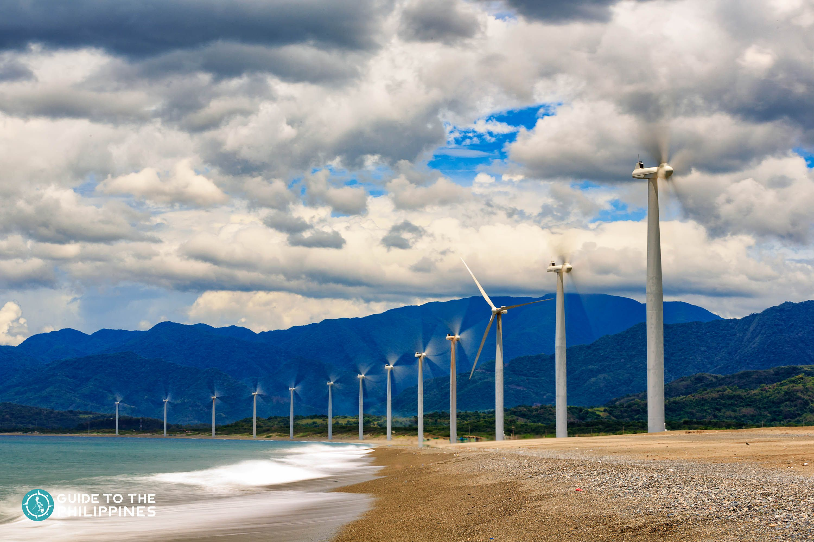

The Majestic Bangui Windmills: Where Nature Meets Innovation
Standing tall along the scenic shores of Bangui Bay, the Bangui Windmills are one of the most iconic landmarks in Ilocos Norte. These towering white wind turbines, set against the backdrop of the deep blue sea and rolling waves, not only provide a breathtaking view but also serve as a symbol of the country’s commitment to renewable energy. As the first wind farm in Southeast Asia, the Bangui Windmills generate clean electricity, reducing the region’s reliance on fossil fuels. Visitors can marvel at the massive structures, take stunning photos, and enjoy the refreshing coastal breeze. Whether you’re a traveler seeking adventure, a nature enthusiast, or a supporter of green energy, the Bangui Windmills offer a truly awe-inspiring experience.
SANGBAY FALLS BATAC
A Refreshing Oasis Nestled in Batac’s Wilderness
If there is one thing that is synonymous to Ilocos Norte, that is no other than their iconic windmills! Situated near the Bangui Bay in Ilocos Norte, Bangui Windmill Farm is the right destination for tourists who want to explore the northern region. Not only are these wind turbines a sustainable environmental innovation, but it has also become a top tourist attraction in the province. It may also remind you of Denmark’s scenic windmill parks. Thousands of tourists visit Bangui Windmill Farm, especially during summer season. Good thing is that there are no fees to pay to get a stunning photo underneath one of the towering windmills. Make sure to visit the windmill farm during daylight to get a glimpse of the beautiful windmill attraction.